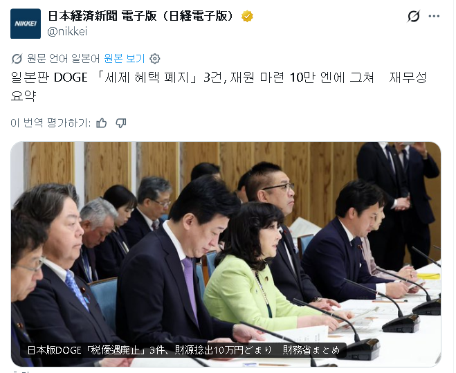

https://www.nikkei.com/article/DGXZQOUA0294S0S6A900C2000000/?n_cid=SNSTW001&n_tw=1788432262
몇개월 간의 회의와 각계 부처 조율을 거친 결과,
10만엔 정도의 정부 예산을 절약하는데 성공했다.
일본쪽 반응은 블랙 코미디를 보는 것 같다는 의견이 많다.
회의 하면서 소모된 예산이 절약한 돈의 100배 이상이니까,
차라리 아무 것도 안 한 게 훨씬 이득이라는 것.
이누DOGE